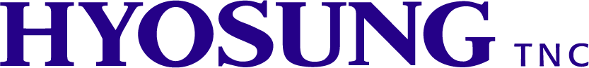
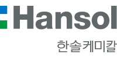

대표 로고대표 브랜드 마크
대표 로고대표 브랜드 마크홈 > 브랜드 매거진 > 효성
효성
효성(Hyosung)은 섬유·중공업·화학을 아우르는 한국의 복합 기업집단으로, 1966년 동양나일론에 뿌리를 둔다.
산업 분야 브랜드·비즈니스 · 공개 등급 자료 기반 · 브랜드 평가 4.2 ★
한눈에 보는 브랜드
효성은 1957년 효성물산에서 출발해 1966년 동양나이론 설립으로 본격화한 한국의 대표 산업그룹이다. 1968년 울산공장 준공과 1973년 증시 상장이 초기 도약의 두 분기점이었고, 이후 섬유에서 중공업·화학·산업자재로 사업을 넓혔다.
2024년 지주회사 인적분할로 효성과 HS효성 두 축으로 재편됐으며, 주력 계열사 합산 매출은 수조 원대에 이르는 거대 기업집단이다.
브랜드 관점
효성의 경쟁력은 소재 한 분야를 끝까지 파고든 깊이에 있다. 스판덱스 크레오라는 1992년 양산을 시작한 후발주자였으나, 중국·인도·베트남·브라질로 생산거점을 확장하며 2010년 세계 1위에 올랐고 30%를 넘는 글로벌 점유율을 지켜 라이크라·인비스타를 추월했다.
폴리에스터 타이어코드 역시 세계 점유율 약 50%로 1위다. 섬유의 반도체로 불리는 고기능 소재에서 원가와 품질을 동시에 확보한 전략이 핵심이다.
2024년 인적분할은 조현준·조현상 형제의 독립경영을 제도화한 사건으로, 효성은 티앤씨·중공업·화학을, HS효성은 첨단소재 축을 맡아 의사결정 속도와 책임을 분리했다. 전력기기 호황과 소재 1위 지위가 맞물려, 수출 중심 한국 제조업의 고부가 전환을 보여주는 사례다.
시작과 성장
1950~60년대 한국은 원사를 수입에 의존하던 섬유 후진국이었다. 삼성 동업 경영을 정리한 조홍제는 56세이던 1966년 자본금 1억원으로 동양나이론을 세워 울산 매암동에 공장을 지었다.
그는 늦되고 어리석다는 뜻의 아호 만우를 스스로 지었지만, 외국 기술 도입에 머물지 않고 기술 독립을 목표로 삼았다. 1968년 울산공장 준공으로 나일론 자체 생산이 시작됐고, 1973년 증시 상장으로 자본 기반을 갖춘 것이 1차 도약이었다.
1980년대에는 효성그룹·한국타이어그룹·효성기계그룹으로 나뉘며 독립경영 체제를 세웠고, 화학·정보통신·중공업·건설로 다각화했다. 1990년대에는 고부가 소재에 집중해 스판덱스와 765kV 변압기를 독자기술로 개발했는데, 이것이 2차 도약이자 오늘의 글로벌 1위 제품군의 뿌리가 됐다.
브랜드 아이덴티티
효성의 정체성은 기술로 인류의 삶을 풍요롭게 한다는 산업적 사명에 닿아 있다. 2024년 출범한 HS효성은 새 CI 마스테리아를 선보였는데, 라틴어 원천을 뜻하는 마테리아와 별의 여신 아스테르를 결합해 세상을 이끄는 별과 가치를 키우는 나무를 형상화했다.
HS블루는 탁월함과 혁신, HS그린은 책임과 신뢰, HS오렌지는 자부심과 열정을 상징한다. 슬로건 밸류 투게더는 함께 가치를 만드는 가치경영을 강조한다.
주된 상대는 일반 소비자보다 섬유·자동차·전력 산업의 글로벌 기업 고객이며, 메시지는 화려함보다 기술 신뢰와 품질 일관성에 무게를 둔 차분하고 단단한 어조를 지닌다.
제품과 서비스
사업은 크게 섬유·산업자재·중공업·화학·정보통신으로 나뉜다. 효성티앤씨의 스판덱스 크레오라와 나일론·폴리에스터 원사가 섬유의 중심이고, 첨단소재의 폴리에스터 타이어코드와 탄소섬유·아라미드가 산업자재를 떠받친다.
중공업은 변압기·차단기 등 전력기기와 765kV 초고압 송전 솔루션을, 화학은 폴리프로필렌과 필름 등을 공급한다. 거래는 의류 브랜드, 타이어·완성차, 전력 인프라 기업을 상대로 한 B2B 공급이 중심이며, 글로벌 생산거점과 영업망으로 세계 시장에 나간다.
현재 상태
타임라인
정리된 연도형 이벤트가 없습니다.
BI/CI 변천사
대표 로고대표 브랜드 마크함께 읽을 브랜드

브랜드·비즈니스 · 자료 기반효성티앤씨효성티앤씨(Hyosung TNC)는 스판덱스 브랜드 크레오라를 주력으로 하는 한국의 섬유·무역 기업이다.
YO
YO!
브랜드·비즈니스 · 편집 검수YO!YO!는 2016년에 기록된 Designed by Paul Belford Ltd 계열의 브랜드 아이덴티티 사례입니다. Paul Belford Ltd가 아이덴티티 작업...
 모빌리티 · 자료 기반한국타이어
모빌리티 · 자료 기반한국타이어한국타이어(Hankook Tire & Technology)는 1941년 설립된 한국 최초이자 점유율 1위의 타이어 기업이다.
 브랜드·비즈니스 · 자료 기반코오롱인더스트리
브랜드·비즈니스 · 자료 기반코오롱인더스트리코오롱인더스트리(Kolon Industries)는 산업자재·화학소재·필름·패션을 영위하는 한국의 종합 소재·화학 기업이다.

브랜드·비즈니스 · 자료 기반한솔케미칼한솔케미칼(Hansol Chemical)은 과산화수소와 반도체·디스플레이 전자소재를 주력으로 하는 한국의 정밀화학 기업이다.
 브랜드·비즈니스 · 편집 검수Citibank
브랜드·비즈니스 · 편집 검수Citibank씨티(Citi)는 미국 씨티그룹이 운영하는 글로벌 소비자·기업 금융 브랜드로, 1812년 뉴욕에서 출발한 시티뱅크 오브 뉴욕을 뿌리로 한다. 빨강 아치가 워드마크 위...
 브랜드·비즈니스 · 편집 검수Cosmo Oil
브랜드·비즈니스 · 편집 검수Cosmo Oil코스모석유는 일본의 정유·석유 정제 및 주유소 운영 기업으로, 현재 지주회사 코스모에너지홀딩스 산하의 핵심 사업회사다. 가솔린, 경유, 윤활유 등 석유제품의 정제와...
 브랜드·비즈니스 · 편집 검수Mitsubishi Motors
브랜드·비즈니스 · 편집 검수Mitsubishi Motors미쓰비시 자동차(Mitsubishi Motors Corporation, MMC)는 일본을 대표하는 자동차 제조사로, 세 개의 빨간 마름모를 겹친 스리 다이아몬드 엠블...